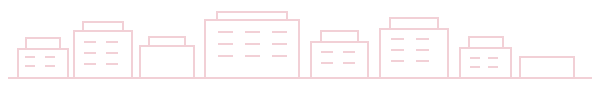

<!doctype html>
<html lang="zh-CN"><head><meta charset="utf-8"><meta name="viewport" content="width=device-width,initial-scale=1"><meta name="description" content="徐清华课题组，宁波东方理工大学化学与化学生物学学院"><title>徐清华课题组 | 宁波东方理工大学</title><link rel="stylesheet" href="styles.css"></head>
<body class="shell-body">
<div class="site-shell">
  <aside class="sidebar">
    <div class="identity">
      <a class="logo-link" href="https://www.eitech.edu.cn/" target="_blank" rel="noopener noreferrer" aria-label="宁波东方理工大学主页"></a>
      <a class="school-unit" href="https://ccb.eitech.edu.cn/" target="_blank" rel="noopener noreferrer">化学与化学生物学学院（SC&amp;CB）</a>
      <a class="group-name" href="index.html" aria-label="徐清华课题组（The Xu Group）">徐清华课题组（The Xu Group）</a>
    </div>
    <nav class="main-nav" aria-label="主导航">
      <div class="nav-item active"><svg viewBox="0 0 24 24" aria-hidden="true"><path d="M4.5 10.5 12 3l7.5 7.5M6.5 9v11h11V9"/></svg><a href="home.html" target="contentFrame" class="nav-cn">首页</a><a href="home_en.html" target="contentFrame" class="nav-en">Home</a></div>
      <div class="nav-item"><svg viewBox="0 0 24 24" aria-hidden="true"><path d="M12 21c-2-3-5-4-7-6-2-2-1-5 1-6 2-1 4 0 6 3 2-3 4-4 6-3 2 1 3 4 1 6-2 2-5 3-7 6ZM12 12V3M9 6l3-3 3 3"/></svg><a href="members.html" target="contentFrame" class="nav-cn">成员</a><a href="members_en.html" target="contentFrame" class="nav-en">Member</a></div>
      <div class="nav-item"><svg viewBox="0 0 24 24" aria-hidden="true"><path d="m12 2 8 4.5v11L12 22l-8-4.5v-11L12 2Z"/><path d="m8 8 4-2 4 2v5l-4 2-4-2V8ZM16 5l3 2M5 16l3 2"/></svg><a href="research.html" target="contentFrame" class="nav-cn">研究</a><a href="research_en.html" target="contentFrame" class="nav-en">Research</a></div>
      <div class="nav-item"><svg viewBox="0 0 24 24" aria-hidden="true"><path d="M3 4h18v16H3zM3 9h18M3 14h18"/></svg><a href="publications.html" target="contentFrame" class="nav-cn">论文</a><a href="publications_en.html" target="contentFrame" class="nav-en">Publication</a></div>
      <div class="nav-item"><svg viewBox="0 0 24 24" aria-hidden="true"><path d="M6 3h12v18H6zM9 7h6M9 11h6M9 15h6"/></svg><a href="teaching.html" target="contentFrame" class="nav-cn">教学</a><a href="teaching_en.html" target="contentFrame" class="nav-en">Teaching</a></div>
      <div class="nav-item"><svg viewBox="0 0 24 24" aria-hidden="true"><path d="M10 13a5 5 0 0 0 7.1 0l2-2a5 5 0 0 0-7.1-7.1l-1.2 1.2M14 11a5 5 0 0 0-7.1 0l-2 2A5 5 0 0 0 12 20.1l1.2-1.2"/></svg><a href="links.html" target="contentFrame" class="nav-cn">链接</a><a href="links_en.html" target="contentFrame" class="nav-en">Links</a></div>
      <div class="nav-item"><svg viewBox="0 0 24 24" aria-hidden="true"><circle cx="12" cy="12" r="9"/><path d="M12 3v9h9"/></svg><a href="news.html" target="contentFrame" class="nav-cn">新闻</a><a href="news_en.html" target="contentFrame" class="nav-en">News</a></div>
    </nav>
    <div class="sidebar-footer"><div class="footer-school">宁波东方理工大学</div></div>
  </aside>
  <main class="content-panel"><iframe name="contentFrame" id="contentFrame" src="home.html" title="课题组内容" class="content-frame"></iframe></main>
</div>
<script>
const frame=document.getElementById('contentFrame');
const items=[...document.querySelectorAll('.nav-item')];
document.querySelectorAll('.nav-item a').forEach(a=>a.addEventListener('click',()=>{
  items.forEach(item=>item.classList.toggle('active',item.contains(a)));
}));
frame.addEventListener('load',()=>{
  try{
    const file=frame.contentWindow.location.pathname.split('/').pop();
    const match=document.querySelector('.nav-item a[href="'+file+'"]');
    if(match) items.forEach(item=>item.classList.toggle('active',item.contains(match)));
  }catch(e){}
});
</script></body></html>
